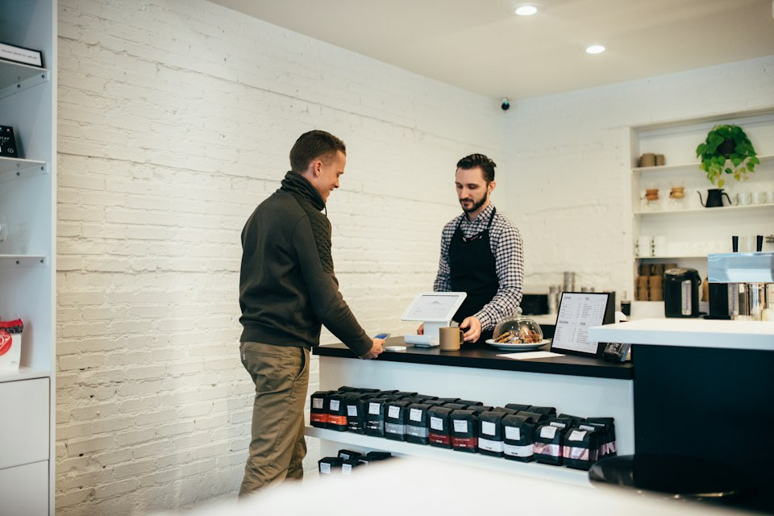
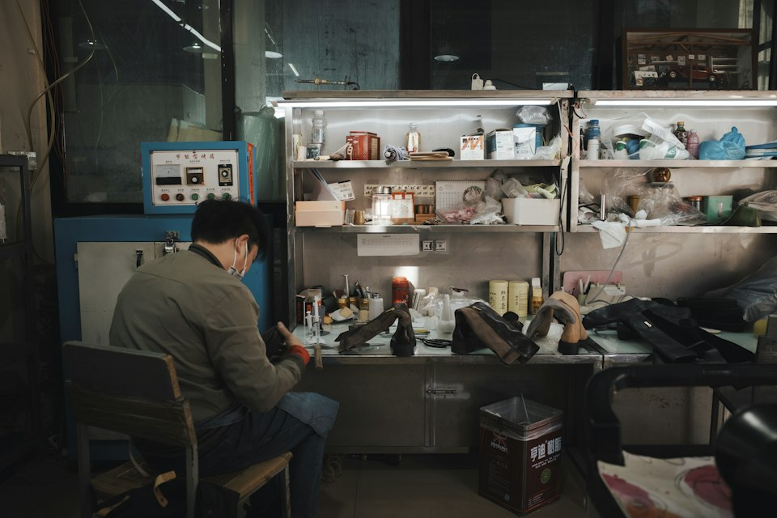
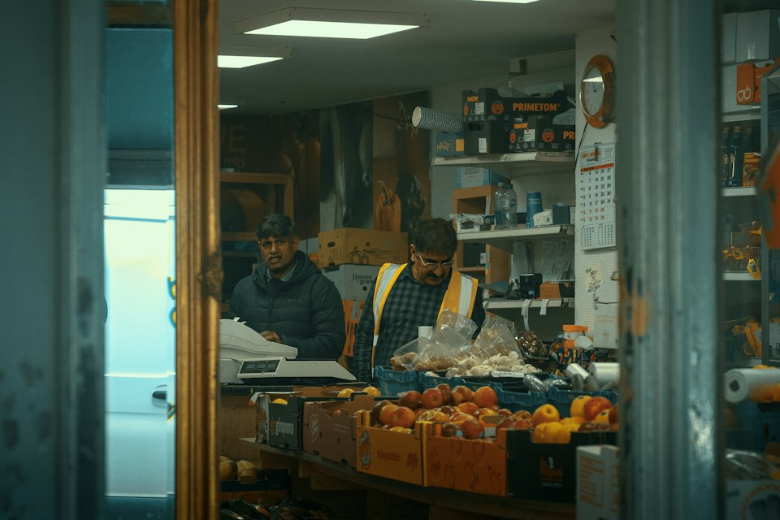

Four audiences, four different journeys
A merchant, an SME owner, a microfinance customer and a prospective lender each need different information. This page keeps the journeys separate instead of forcing one generic sequence.
Fictional demonstration
Choose a journey
A collection flow that ends with a readable day
The merchant's question is simple: did the money arrive, and what is still outstanding?

-
Accept the payment
QR at the counter, a payment link for a remote order, or a card terminal at a larger shop.
-
Read the status
A written label explains whether the payment is completed, pending or failed.
-
Check the settlement
Gross amount, illustrative fee and expected date are shown separately.
-
Reconcile by exception
Only unmatched items need attention at the end of the day.
From a vague need to a comparable structure
The SME's question is about trade-offs: what does a longer term cost, and can the instalment survive a slow month?

-
Define the purpose
Equipment, stock, a new outlet or simply timing between payments.
-
Compare sample structures
Filter by category and compare term, rate and frequency side by side.
-
Model the instalment
Use the calculator to see both the instalment and the total cost.
-
Prepare documents
Assemble trading records before any real advisory conversation.
Repayment timing that follows the trading week
A micro-entrepreneur needs to know the instalment date, the amount, and what happens in a bad week.

-
Review the schedule
Weekly or fortnightly instalments matched to income rhythm.
-
Check total cost
The sum of all instalments, not just the amount due each period.
-
Plan a buffer
Set aside a small reserve so one slow week does not become a missed payment.
-
Track repayments
Keep a written record of each payment and its date.
Understanding the downside first
Anyone considering lending should be able to state the maximum they could lose before looking at any potential return.
-
Read the risk disclosure
Default, concentration, liquidity and platform risk explained in plain terms.
-
Set an exposure limit
Decide what could be lost entirely without affecting essential spending.
-
Spread contributions
Many small amounts rather than one large commitment.
-
Reassess periodically
Review records and adjust expectations rather than assuming steady returns.
Say the cost in full
Total repayment, all fees, and the consequences of a missed payment — in writing and before any commitment.
Never hide a status
Pending, completed and failed are written out. Colour is only a secondary cue.
Respect attention
Short paragraphs, clear headings and consistent card layouts so screens can be scanned quickly.
Admit the limits
Every page states what the demonstration cannot do: no applications, no payments, no investment.